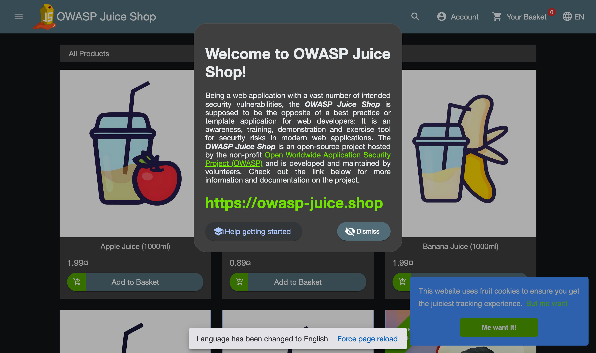
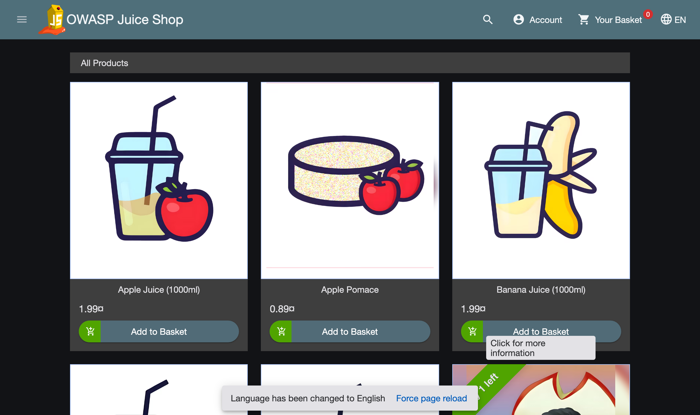
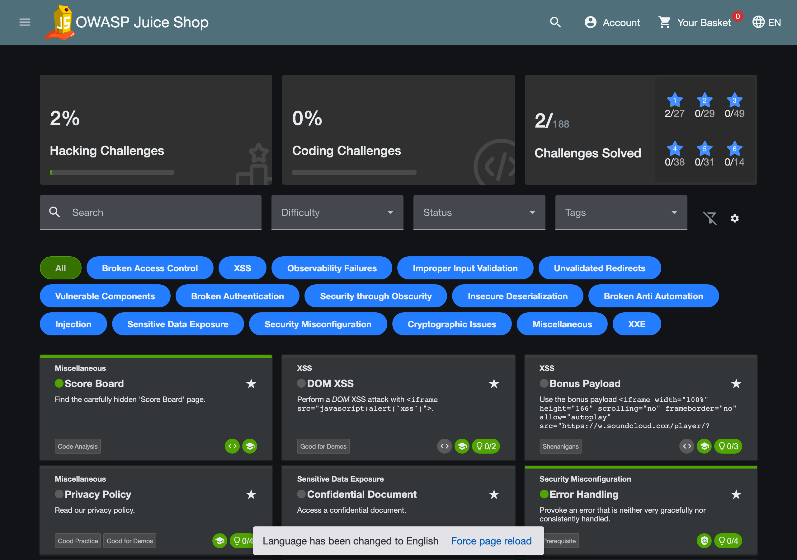

Место, где можно ломать, искать баги и дыры в безопасности — и за это ничего не будет. Здесь: что это, зачем, как поставить за 10 минут, как играть и что делать, если ничего не работает.
Комплект: github.com/PolyAtomicIon/aql-sandbox · Juice Shop 20.4.0 — проект OWASP, лицензия MIT.
Тестировщик (QA) — человек, который находит проблемы раньше пользователя. Кнопка не нажимается, форма принимает дату «31 февраля», чужой человек видит твои оценки — всё это должен поймать QA.
Чтобы научиться, нужно много пробовать: вводить странное в формы, ломать корзину, подсматривать запросы в DevTools. Делать это на настоящем портале AQL нельзя — там учатся живые люди, и любая «проверка» может что-то сломать по-настоящему. Поэтому у нас есть песочница — две вещи:
Интернет-магазин соков, в котором специально спрятано больше сотни уязвимостей. Ты ищешь — он сам засчитывает: найдена дыра → зелёная плашка «You successfully solved a challenge».
Работает у тебя на компьютере, адрес localhost:3000. Никому не мешаешь,
ничего не сломаешь.
Сайты, сделанные для тренировки тестировщиков: магазины с багами, формы, учебный банк, учебные API.
Ставить ничего не надо — открываешь в браузере. Список на стр. 10.
Почему Juice Shop. Его делает OWASP — мировая некоммерческая организация по безопасности веба. На нём учатся в университетах и на курсах по всему миру. Задания разбиты по темам, которые встречаются в настоящих сайтах каждый день: инъекции, XSS, сломанный доступ, утечка данных.
localhost:3000 и сайты из списка на стр. 10. Портал AQL, сайты школы,
чужие сайты, Wi-Fi академии — нельзя. Взлом чужой системы — это уголовное дело, даже если ты
«просто посмотрел» и ничего не менял.test@test.com, Qwerty123!.Если случайно нашёл баг или дыру на портале AQL — молодец, это и есть работа QA. Не пытайся её «развить» и проверить глубже: сразу опиши, что сделал, и отправь лиду.
Слова, которые встретятся дальше. Не надо учить — просто возвращайся сюда.
| Слово | Что значит |
|---|---|
| Баг | Программа делает не то, что должна. Кнопка не работает, цена посчитана неверно. |
| Уязвимость | Баг, через который можно сделать то, что нельзя: войти без пароля, увидеть чужое, украсть данные. |
| localhost | «Этот компьютер». localhost:3000 — сайт, который работает у тебя, а не в интернете. |
| Порт | Номер «двери» программы на компьютере. Juice Shop слушает дверь 3000. |
| Терминал | Окно, где команды пишут текстом. На Windows — «Командная строка», на Mac — «Терминал». |
| Node.js | Программа, которая запускает код на JavaScript вне браузера. На ней работает Juice Shop. |
| DevTools | Инструменты разработчика внутри браузера. Открываются клавишей F12 (Mac: ⌥⌘I). Главный инструмент QA. |
| Запрос (request) | Сообщение, которое браузер отправляет серверу: «дай список товаров», «вот мой логин». Видно во вкладке Network. |
| API | «Окошко» сервера для программ: не страницы, а данные в формате JSON. |
| Cookie | Записка, которую сайт хранит в твоём браузере: кто ты, что в корзине, твой прогресс. |
| XSS | Когда сайт показывает твой текст как код. Вводишь в поиск кусок HTML — и он выполняется на странице. |
| SQL-инъекция | Когда ввод в форму попадает прямо в запрос к базе данных и меняет его смысл. Классика: вход без пароля. |
| Баг-репорт | Описание бага, по которому другой человек его повторит: шаги, что ожидал, что получил, скриншот. |
Нужно: Windows 10 или 11, около 1 ГБ места, интернет на первый запуск. Займёт 10 минут.
.msi и жми Next до конца. Галочки не трогай.
Если спросит про «Tools for Native Modules» — галочку можно не ставить.aql-sandbox-main.zip → Извлечь всё → Извлечь.
Важно именно распаковать, а не открыть архив двойным кликом.Чёрное окно будет выглядеть примерно так:
Пока оно открыто — Juice Shop работает. Закрыл — магазин выключился. Завтра просто снова дважды кликни start-windows.bat: второй раз всё запустится за 10–20 секунд и без интернета.
Нужно: Mac на чипе M1, M2, M3 или M4, около 1 ГБ места, интернет на первый запуск.
Меню с яблоком слева сверху → Об этом Mac. Написано «Чип Apple M…» — подходит. Написано «Процессор Intel» — готовой сборки нет, используй онлайн-версию demo.owasp-juice.shop (см. стр. 11).
.pkg и жми Продолжить до конца. Попросит пароль от Mac — это нормально.⌘ + пробел, набери «Терминал», нажми Enter.Второй способ (если не любишь Терминал): скачай комплект через Code → Download ZIP, открой папку и сделай правый клик → Открыть по файлу start-mac.command. Если macOS пишет, что не может проверить разработчика: Системные настройки → Конфиденциальность и безопасность → внизу «Всё равно открыть».
Пока оно открыто — Juice Shop работает. Завтра — та же строка в Терминале, запуск за 10 секунд.
Браузер откроет http://localhost:3000. Не открылся — набери адрес сам. Именно http, не https.


Все задания собраны на странице Score Board, но в меню её нет — её спрятали. Найти её и есть первое
задание. Подсказка: сайт знает адреса всех своих страниц, и их можно подсмотреть в DevTools
(F12 → вкладка Sources → файл main.js → поиск Ctrl+F по слову score).
Не нашёл за 15 минут — спроси лида, это нормально.

| Значок на карточке | Что это |
|---|---|
| ★ | Сложность: от одной до шести звёзд. Начинай с одной звезды. |
| 🎓 шапочка | Пошаговый тренер (Hacking Instructor): ведёт за руку прямо по сайту. Есть у 13 простых заданий — пройди их первыми. |
| 💡 0/3 | Подсказки. Нажал — открылась следующая. Цифра — сколько открыто из скольких. |
| <> | Задание на код: найти строчку с дырой в исходнике. Это уровень посложнее — потом. |
Сверху выскакивает зелёная плашка «You successfully solved a challenge: …», а карточка на табло становится зелёной. Прогресс сохраняется в браузере сам: выключил Juice Shop, включил завтра — решённое на месте. Только заходи тем же браузером и не чисти cookies.
Язык. Глобус справа сверху → можно выбрать «Pусский», но переведено меньше половины. Советуем оставить English и переводить непонятное переводчиком: в работе всё равно всё на английском.
Открывается клавишей F12 (Windows) или ⌥ + ⌘ + I (Mac). Удобнее держать его справа или снизу.
| Вкладка | Зачем QA |
|---|---|
| Network | Какие запросы уходят на сервер и что он отвечает. Здесь видно больше, чем на экране: скрытые поля, чужие данные, коды ошибок 4xx и 5xx. |
| Console | Ошибки JavaScript (красные строки). Для баг-репорта — делай скриншот. |
| Elements | HTML страницы. Можно найти спрятанные кнопки и поля, временно поменять текст. |
| Application | Cookies и хранилище браузера: здесь лежат токен входа, язык, прогресс. |
| Sources | Файлы сайта (JavaScript). Здесь прячут адреса страниц и забытые комментарии. |
', кусок HTML./basket/1 → /basket/2 — это уже чужая корзина?1) Прочитай описание задания ещё раз, медленно. 2) Открой подсказку 💡. 3) Попробуй 20 минут сам. 4) Спроси команду. Есть и официальная книга с решениями «Pwning OWASP Juice Shop» — но если подсматривать сразу, ты ничему не научишься.
| День | Что сделать | Результат |
|---|---|---|
| 1 | Поставить Juice Shop. Погулять по магазину как покупатель: регистрация, корзина, отзыв. Найти Score Board. | Табло открыто, 1 задание |
| 2 | Пройти задания с 🎓 шапочкой по порядку: DOM XSS, Bonus Payload, Privacy Policy. | 4–5 заданий |
| 3 | Остальные ★1: Error Handling, Confidential Document, Zero Stars, Repetitive Registration, Exposed Metrics, Missing Encoding, Outdated Allowlist, Mass Dispel. | все ★1 |
| 4 | Учебный сайт saucedemo.com: войти как standard_user и как problem_user, записать все отличия. | 5+ баг-репортов |
| 5 | Шапочки дальше: Reflected XSS, Login Admin, Admin Section, View Basket. Первые ★2. | первые ★2 |
Задания из таблицы — это имена на карточках табло. Найти карточку проще всего поиском (Search) на табло.
Хороший баг-репорт — такой, по которому другой человек повторит баг без вопросов к тебе.
Это реальный баг saucedemo — проверь сам. Свои баг-репорты пиши по той же схеме.
Ничего ставить не надо — открывай в браузере. Сайты общие для всех людей в мире: данные на них могут меняться и пропадать, это нормально. Не нагружай их скриптами.
| Сайт | Что там | Что тренировать |
|---|---|---|
| practicesoftwaretesting.com | Магазин инструментов «Toolshop», есть версии с багами | Чек-листы, тест-кейсы, баг-репорты |
| saucedemo.com | Маленький магазин; логины написаны прямо на странице входа | Вход, корзина; problem_user полон багов |
| the-internet.herokuapp.com | Сборник «трудных» элементов: попапы, загрузки, iframe | Проверка отдельных элементов |
| demoqa.com | Формы, таблицы, виджеты | Граничные значения, валидация |
| automationexercise.com | Полный магазин + готовый список тест-кейсов | Регистрация, заказ, свои кейсы против готовых |
| parabank.parasoft.com | Учебный «банк» | Регистрация, переводы, баги в деньгах |
| buggy.justtestit.org | Рейтинг машин, специально полон багов | Свободный поиск багов |
| restful-booker | API бронирования отелей | Postman: GET / POST / PUT / DELETE, токены |
| petstore.swagger.io | API зоомагазина с документацией Swagger | Читать документацию API, слать запросы со страницы |
| reqres.in | Простой учебный API | Первые запросы, коды ответов |
На учебных сайтах тренируй ручное тестирование и API. Атаки (XSS, инъекции, перебор паролей) —
только в своём Juice Shop на localhost:3000.
Сначала найди свой вопрос здесь. Не нашёл — сделай скриншот всего экрана с ошибкой и отправь лиду. «Не работает» без скриншота — не вопрос.
Нет. Juice Shop — официальный учебный проект OWASP. Он «дырявый» нарочно, но дыры только внутри него самого. Скрипт скачивает его с официальной страницы на GitHub и проверяет контрольную сумму.
Внутри Juice Shop есть примеры «вредных» строк для заданий — некоторые антивирусы на них реагируют. Это ложная тревога. Не отключай антивирус сам — напиши лиду.
Node.js не установлен или установлен только что. Поставь (шаг 1), закрой все окна и запусти снова. Не помогло — перезагрузи компьютер.
Стоит старый Node.js. Скачай LTS с nodejs.org и установи поверх — старая версия заменится.
Подробнее → Выполнить в любом случае.
Используй способ с Терминалом (стр. 5) — там этого окна нет. Или: Системные настройки → Конфиденциальность и безопасность → «Всё равно открыть».
Онлайн-версия: demo.owasp-juice.shop — тот же магазин без установки. Минус: она общая для всех в интернете и иногда перезапускается, прогресс может пропасть.
Windows: открой папку с файлом, в адресной строке папки напиши cmd и нажми Enter. В окне набери start-windows.bat и Enter — теперь ошибка останется на экране. Сделай скриншот.
Juice Shop уже работает в другом окне (тогда скрипт просто откроет браузер) — или порт держит другая программа, например твой проект на React. Закрой её или перезагрузи компьютер.
Набери вручную: http://localhost:3000.
Чёрное окно закрыто — Juice Shop не работает. Запусти скрипт ещё раз и подожди 10–20 секунд.
Плохой интернет — просто запусти ещё раз. Если не помогает на Wi-Fi академии — попробуй дома или с телефона.
Ты зашёл другим браузером, в режиме инкогнито или почистил cookies. Прогресс живёт в браузере. Вернись в свой обычный браузер.
Открой Juice Shop в окне инкогнито — это чистый лист. Обычный браузер сохранит старый прогресс.
Закрой чёрное окно (или нажми в нём Ctrl + C).
Удали папку aql-juice-shop в своей домашней папке: Windows — C:\Users\ТвоёИмя\aql-juice-shop, Mac — ~/aql-juice-shop. Node.js можно оставить, он пригодится.
Для Juice Shop — только в первый раз. Учебным сайтам — всегда.
Нет. Портал — живая система с данными людей. Случайно нашёл баг — опиши и отправь лиду, не копай глубже.
Нет, только компьютер. На телефоне можно открывать учебные сайты.
Почти всё в IT на английском: ошибки, документация, инструменты. Juice Shop — хорошая тренировка. Переводчик в браузере — нормально.
В конце недели отправь в чат команды:
Цель не «решить всё». Цель — научиться думать как тестировщик: замечать, где программа может ошибиться, проверять это и понятно описывать. Каждое решённое задание — это навык, который потом пригодится на портале AQL.